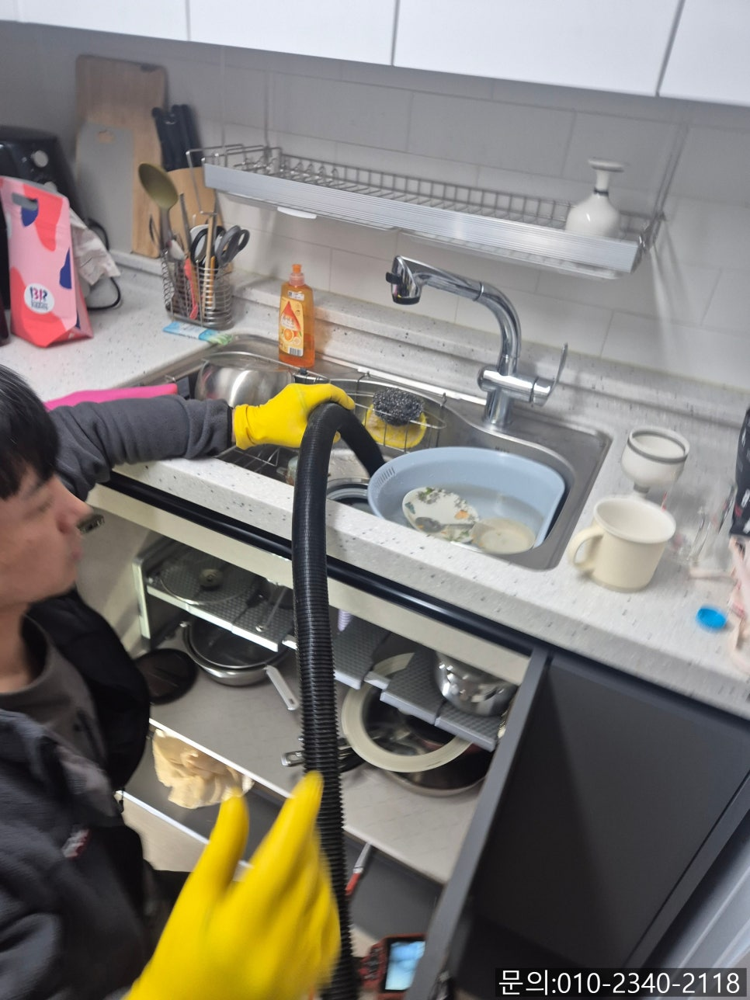
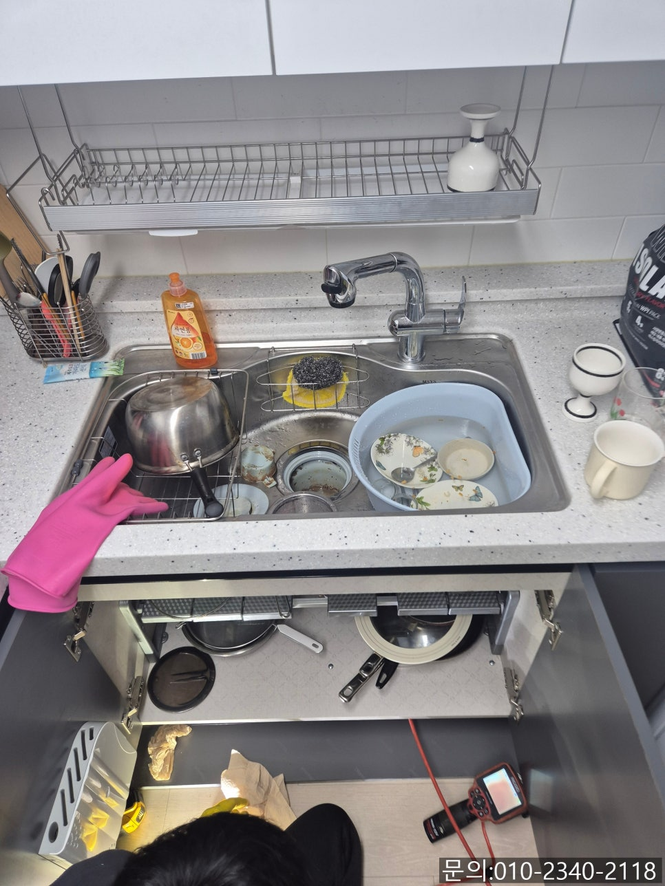
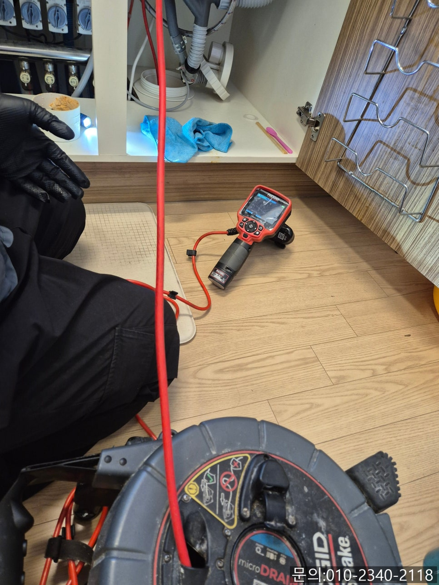
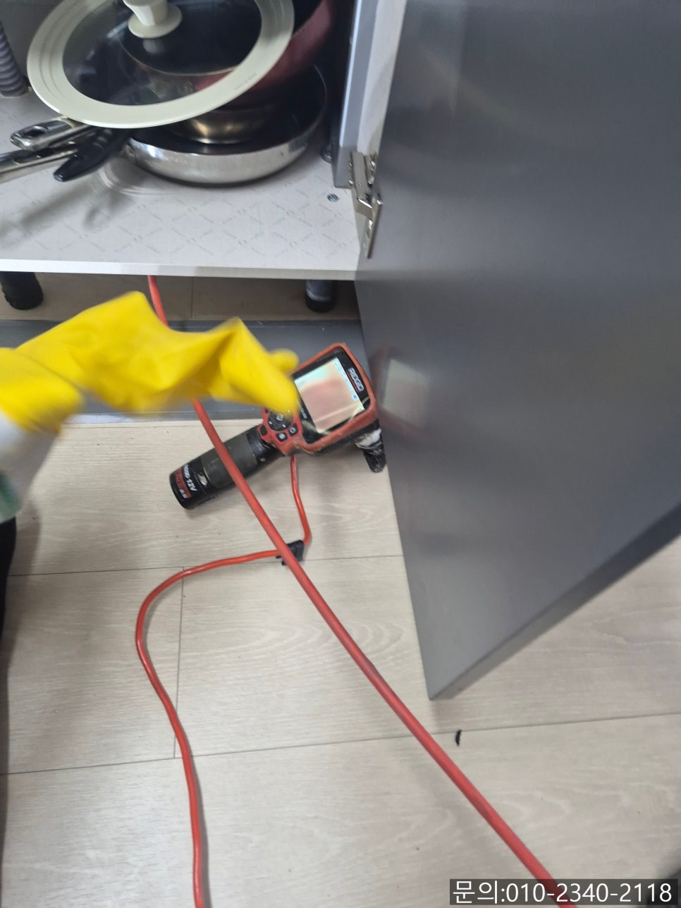
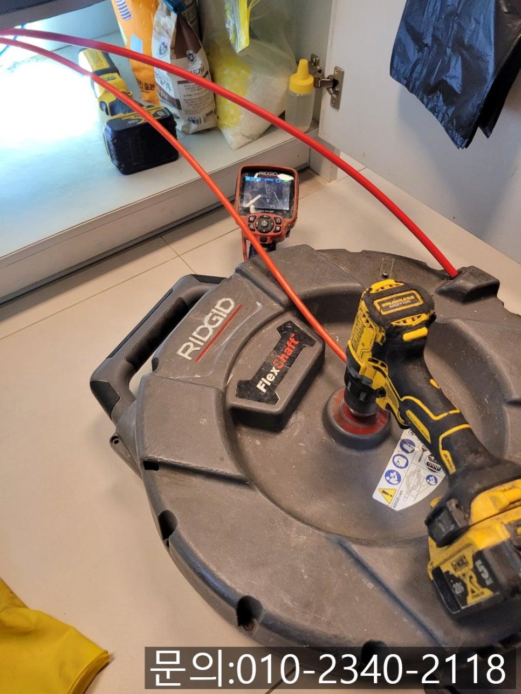
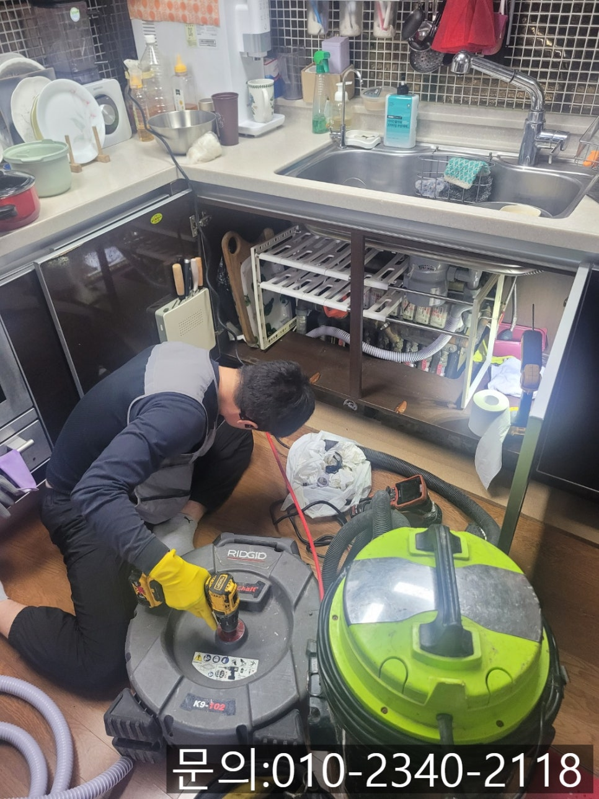

🏠 하대원동 하수구 막힘 성남 중원구 도촌동 싱크대 역류 전문 설비업체
성남 원동 싱크대막힘 전문 시공 후기

📋 작업 개요
- 위치: 성남 원동, 원동, 성남
- 서비스 유형: 싱크대막힘, 하수구막힘, 배관막힘, 역류해결, 배관청소, 고압세척
- 작업 일시: 2025. 5. 3. 9:00
- 업체명: 하수구수사대 (010-5615-2118)
🔍 문제 상황
안녕하세요.
하대원동 하수구 막힘, 성남 중원구 도촌동 싱크대 역류 전문 설비 업체 하수구 다큐입니다.
하대원동 하수구 막힘이 발생하게 되면 직접 해결해 보기 위해 다양한 방법을 시도해 보다가 오히려 상황을 악화시키는 경우가 많습니다.
인터넷으로 검색한 내용을 보면 누구나 다 해결할 수 있을 것 같지만, 배관마다 구조가 다르고 막힘의 원인도 다르다 보니 똑같이 해결할 수 없는 경우가 정말 많습니다.
이럴 땐 빠르고 정확한 해결을 하기 위해 전문 업체에 의뢰하는 게 정답이에요!
하지만 네이버에 검색해 봐도 아시겠지만 업체들이 너무 많다 보니 어떤 업체를 선정해야 할지 어려워하시는 분들이 많습니다.
오늘은 믿을 수 있는 하대원동 하수구 막힘 업체 고르는 방법을 알려드릴게요.
작업 사진 및 후기 있는 업체를 선택하세요.

🔎 원인 분석
💡 전문가 진단: 정밀 진단 장비를 사용하여 슬러지의 고착 여부를 판명하고 타격/세척 작업을 실시했습니다.
하수구 전문 업체에서 대부분 블로그를 이용한 홍보를 많이 하고 있습니다.
하지만 직접 현장에 다니지 않고 홍보만 하는 업체들도 많은데요.
그런 업체들의 경우에는 정말 오래된 사진을 짜집기해 홍보만 하는 경우가 많습니다.
블로그를 통해 업체를 알아보실 때는 실제 작업한 현장의 사진을 사용한 게 맞는지 체크해 보시는 게 좋아요.
2. 다양한 장비를 갖춘 업체인지 확인하세요.
막힘의 원인에 따라 사용하는 장비가 다릅니다.
간혹 전문적인 장비를 갖추지 않고 일하는 일부 업체들도 있기 때문에 기본적으로 배관 내시경, 플렉스 샤프트, 석션, 고압세척 장비 등을 갖췄는지 확인하시는 게 좋습니다.
3. 방문에 걸리는 시간

🔧 작업 과정
싱크대 막힘을 오래 방치하면 더 큰 문제로 이어질 수 있고 다양하게 불편하기 때문에 신속하게 방문할 수 있는 업체를 선정하시는 게 좋습니다.
오늘은 하대원동 하수구 막힘으로 연락을 받고 다녀온 현장을 소개해 드릴게요.
얼마 전부터 주방에서 냄새가 나기 시작했는데 오늘은 주방을 청소하는 과정에서 물이 흘러내려 가지 않고 역류한다는 연락을 받고 신속하게 방문해 드렸습니다.
고객님의 연락을 받고 30분 만에 현장에 도착해 보니 고객님께서 걸레받이를 들어내고 역류한 물을 닦아내고 계신 상태였어요.
우선 석션을 사용해 역류하는 물을 빨아들여 제거해 준 다음 내시경 카메라를 진입시켜 배관 내부를 점검해 보기로 했습니다.
내시경 카메라가 진입하자 기름 슬러지로 인해 화면이 붉게만 보이기 시작했어요.
성남 중원구 도촌동 싱크대 역류 전문 설비업체 하수구 다큐는 고객님께 내시경 카메라로 촬영한 배관 내부의 모습을 보여드리고 작업 계획에 대해 설명해 드렸습니다.
워낙 많은 양의 기름 슬러지로 인해 물이 전혀 흘러가지 못하고 역류하는 상태이다 보니 플렉스 샤프트를 작동시켜 기름 슬러지를 제거하기로 했어요.
플렉스 샤프트 장비는 배관 내부로 진입해 노즐 끝에 달려있는 체인이 360도로 회전하면서 기름 슬러지를 배관 내벽에서 떨어트려주거나 잘게 부서 주는 역할을 하게 됩니다.
잘게 부서진 기름 슬러지는 석션을 이용해 완벽하게 제거하는 작업을 진행했어요.
몇 차례 작업을 진행하자 기름 슬러지가 일부 제거되고 통수가 시작되면서 배관이 모습을 드러내기 시작합니다.
하지만 아직 윗부분에 기름 슬러지가 남아있는 상태로 작업을 계속해서 진행했어요.
내시경 카메라와 석션 플렉스 샤프트 장비를 사용해 반복해서 작업을 진행하자 많은 양의 기름 슬러지를 제거할 수 있었고요.


✅ 작업 완료
마지막에는 모든 기름 슬러지가 제거되고 새것처럼 깨끗해진 배관 내부를 확인할 수 있었습니다.
마무리 작업으로 많은 양의 물을 흘려보내면서 배관 내부에 다른 문제는 없는 건지 꼼꼼하게 테스트도 진행하고 작업을 마무리할 수 있었어요.
오늘은 전문 설비 업체 선정하는 방법에 대해 간단히 알아봤는데요.
기억해두셨다가 막힘이 발생하면 좋은 업체 선정하시는데 도움이 되었으면 좋겠습니다.




⚠️ 주방 싱크대 배관 막힘 예방 수칙
- ✅ 기름기가 묻은 식기나 프라이팬은 설거지 전 키친타올로 반드시 기름때를 닦아내세요.
- ✅ 주기적으로 싱크대 개수대에 뜨거운 물을 가득 받아 한 번에 내려 배관 내부 기름을 씻어내세요.
- ✅ 배수구 거름망을 미세한 필터로 사용하시고 음식물 찌꺼기가 틈으로 새어 들지 않게 관리하세요.
- ✅ 베이킹소다와 식초를 뜨거운 물과 함께 일주일에 한 번씩 부어주면 배관 살균과 막힘 예방에 좋습니다.
💡 핵심 정리
- 확실한 장비 작업(내시경 점검 및 샤프트 스케일링)으로 원인을 뿌리 뽑습니다.
- 작업 후 1년 이내에 동일한 부위 재발 시 100% 무상 A/S 서비스를 보장합니다.
- 서울 · 경기 · 인천 전 지역에 24시간 언제든 긴급 출동할 수 있도록 항시 대기 중입니다.
❓ 자주 묻는 질문 (FAQ)
🚨 성남 원동 싱크대막힘 문제로 고민이신가요?
정확한 원인 진단과 확실한 시공으로 재발 없는 해결을 약속드립니다.
24시간 긴급 출동 | 서울 · 경기 · 인천 전지역 | 1년 내 재발 시 무상 A/S